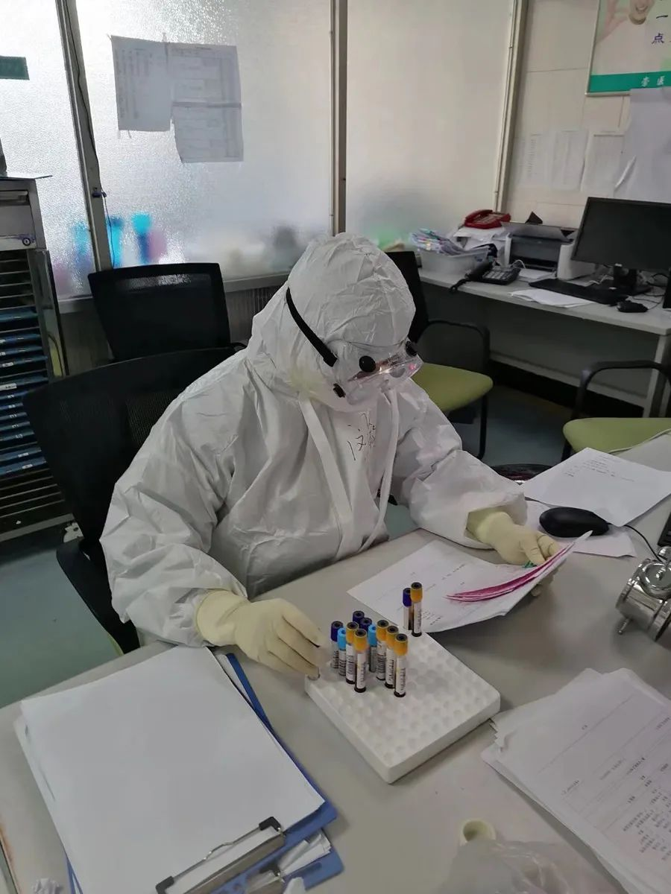
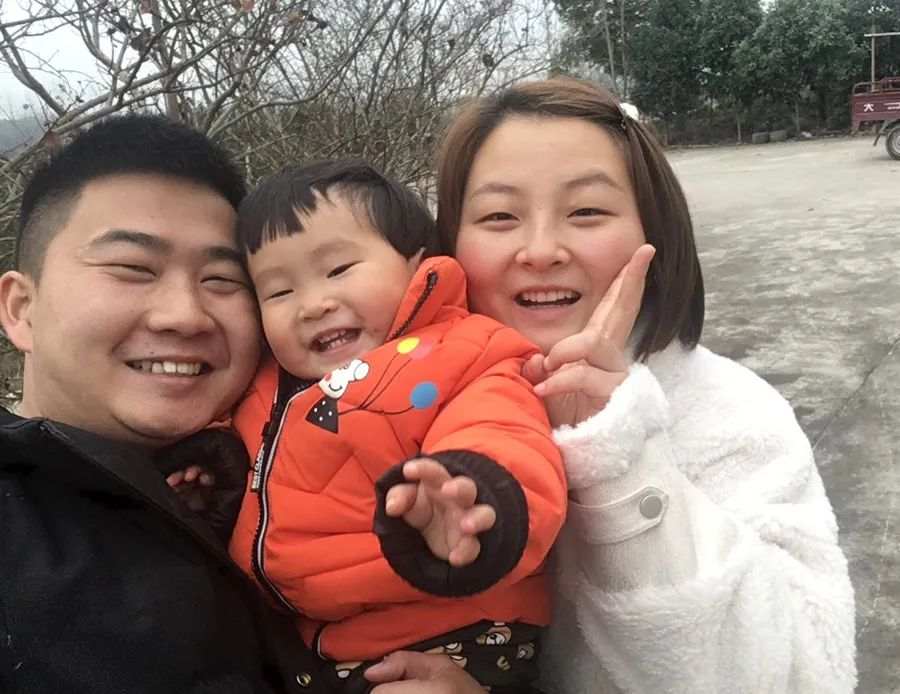

我在华南海鲜市场两公里外，做排查
原文链接 备份链接 澎湃新闻记者 廖艳 实习生 赵雨萌 发自武汉 这３天开展集中拉网式社区排查，让董守芝的手机响的更频繁了，一个电话接一个电话，传来居民的求助、同事的反馈以及领导下发任务的通知。 2月16日，武汉市部署开展为期3天的集中拉 …
澎湃新闻记者 李文姬

2月10日起，闵敏在医院发热病人隔离病区进行护理工作。 本文图片 三峡大学附属仁和医院提供
“15天前，当你告诉我，你已主动报名参加抗击新冠肺炎一线、要去隔离病房工作的时候，我的心情好复杂，这是这段时间以来最害怕你说出口的事……这半月里，除了对你牵挂和担心，更因你的坚持和勇敢感到骄傲和自豪。”农历二月初二，何军波给在抗疫一线的妻子隔空寄出一封“情书”。
何军波是宜昌市高新区生物产业园石花山村村务工作者，从1月23日开始驻村抗疫。他的妻子闵敏是三峡大学附属仁和医院骨科的一名护士。2月10日起，闵敏就在医院发热病人隔离病区进行护理工作。
夫妻俩前后脚上前线，已经一个多月没见上面，每天一家人最期待的就是视频连线的“团聚”时刻。闵敏会给丈夫指指脸上护目镜和口罩留下的红色压痕，也会告诉他，看到病人逐渐康复，所有辛苦都值得。这让何军波既心疼、担忧，又由衷地骄傲。
征得本人同意后，澎湃新闻刊载此信。

视频时，闵敏给丈夫指指脸上护目镜和口罩留下的压痕。
亲爱的老婆：
今天是农历二月初二。老人说，“二月二，龙抬头”，相传在惊蛰前后，百虫蠢动，疫病易生，人们祈望龙抬头出来镇住毒虫。今天也是你赴往“抗疫”一线的第15天，我们已经有1个月没见面了。期待疫情早日结束，我带你去吃你爱吃的火锅。
15天前，当你告诉我，你已主动报名参加抗击新冠肺炎一线、要去隔离病房工作的时候，我的心情好复杂，这是这段时间以来最害怕你说出口的事。作为丈夫，我自然是不愿意你去，因为我们都不知道前路有多凶险；做为一名基层工作者，我已投入防疫工作，了解其中的辛苦和不易；但作为一名党员，面对同样是党员的你，我必须支持你的决定！
所以，即使曾试图说服你放弃报名，但是你说：“我们护士长和我年纪相仿，有家庭也有宝宝，她第一个就报名了！如果大家都不去，那新成立的发热病区工作怎么开展？你从大年三十回村驻守，尽职尽责，我也应该贡献我的一份光和热。”你的话我却无言以对，同时让我内心感到惭愧：曾经极力推荐你写下入党申请书的是我，现在阻碍你火线冲锋的也是我。
自从2月10日你进入发热隔离病区工作以后，我跟宝宝每天都期待与你视频连线的“团聚”时刻。“吃得怎么样？按时休息，注意保暖，调整心态，专注工作……”这是我每次结束聊天之前不厌其烦的叮嘱，我的碎碎念只是希望你平安回来。视频电话的时候，当你指给我看脸上护目镜和口罩留下的红红的压痕，让我心疼不已。现在我每天都期待接到你的电话，想知道你今天的工作是否顺利，吃睡都好不好。我记得以前我当兵出海战备值班时，要切断所有联系，值班结束第一件事就是打电话给你。你每次接到我电话时的那份期待和欣喜，曾经的我体会不到，而现在，我深切体会到了。

何军波、闵敏和他们的女儿。
“刚开始穿防护服的时候还有一点害怕，当我进去后看到病人们渴望的眼神，更加坚信我的选择没有错！当我看到病人经过我们的治疗和护理逐渐康复，让我觉得所有的辛苦都值得！”听到你说这些，由衷地为你感到高兴。这半月里，除了对你牵挂和担心，更因你的坚持和勇敢感到骄傲和自豪。
此刻，你在病房与疫魔搏斗，我在村里守卫百姓平安。虽然没有彼此陪伴，但我相信此时的分隔是为了他日更美好的相聚和相守。等宝宝长大，我们就告诉她：2020年的新冠肺炎防疫阻击战，爸爸妈妈都是一线最勇敢的战士。
本期编辑 常琛
推荐阅读


原文链接 备份链接 澎湃新闻记者 廖艳 实习生 赵雨萌 发自武汉 这３天开展集中拉网式社区排查，让董守芝的手机响的更频繁了，一个电话接一个电话，传来居民的求助、同事的反馈以及领导下发任务的通知。 2月16日，武汉市部署开展为期3天的集中拉 …
原文链接 备份链接 首尔国立大学医院 来源：Wikicommons 记者：潘金花 “ 疫情时隔一周再度爆发，尤其是接连出现了多例感染路径尚不明确的病例，已引起了韩国卫生部门的高度警惕。 ” 在历经了一周的疫情平台期后，韩国本周再次迎来了新 …
原文链接 备份链接 澎湃新闻记者 李佳蔚 陈斯斯 见习记者 张慧 风雨雪纷至，寒潮向上海袭来。 这是2020年以来强度最大的一次寒潮过程。上海疫情防控不停歇，许多人坚守寒夜，守护上海，将风雪姜茶共饮下。 2月15日晚10点至凌晨，澎湃新 …
原文链接 备份链接 岛语 非常时期，武汉成了全国人民挂念、祈福的城市。封城后，武汉人民的真实生活是什么样？ 武汉在发生哪些变化？ 正和岛自1月26日起特别推出“叶青专栏”。叶青是一位定居武汉40年的市民，也是一名学者和官员。在过往多期的专 …
原文链接 备份链接 凤凰新闻客户端 凤凰网在人间工作室出品 *15分钟的路程，我花了15天时间* @高风 坐标：武汉&武汉 肺炎与爱情有2个相似之处：一是身体会有征兆，让人呼吸紧张、情绪不稳；二是无可幸免，稍没注意便会染上，但也 …